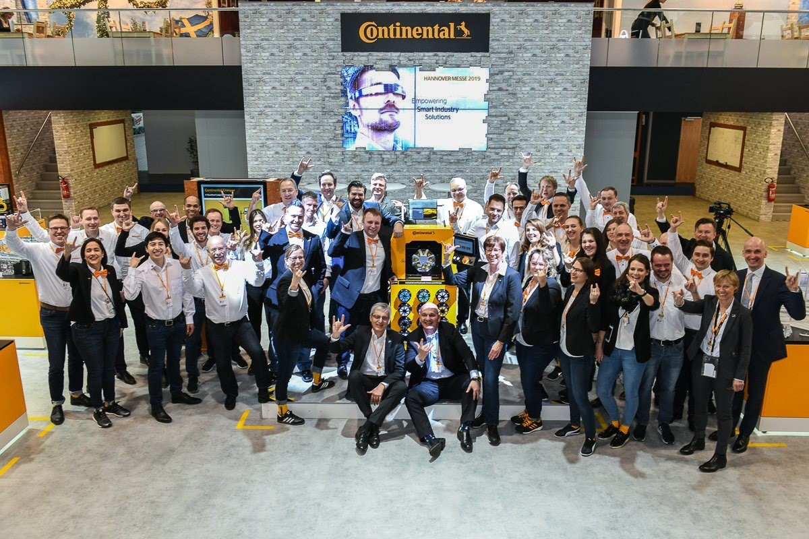

<div id="ajax-page" class="ajax-page-content">
    <div class="ajax-page-wrapper">
        <div class="ajax-page-nav">
            <div class="nav-item ajax-page-prev-next">
                <a class="ajax-page-load" href="beating-roulette.html"><i class="zmdi zmdi-chevron-left"></i></a>
                <a class="ajax-page-load" href="point-of-sale-javafx.html"><i class="zmdi zmdi-chevron-right"></i></a>
            </div>
            <div class="nav-item ajax-page-close-button">
                <a id="ajax-page-close-button" href="#"><i class="zmdi zmdi-close"></i></a>
            </div>
        </div>

        <div class="ajax-page-title">
            <h1>Crimp Specification File Loader</h1>
        </div>

        <div class="row">
            <div class="col-sm-7 col-md-7 portfolio-block">
               <!-- <div class="owl-carousel portfolio-page-carousel">
                    <div class="item">
                        
                    </div>

                </div> -->

               <!-- <div class="portfolio-page-video embed-responsive embed-responsive-16by9">
                 <iframe width="560" height="315" class="embedded-responsive-item" src="https://www.youtube.com/embed/Cbw716NsIVQ" frameborder="0" allow="accelerometer; autoplay; encrypted-media; gyroscope; picture-in-picture" allowfullscreen></iframe>
               </div> -->

                <!--
                <div class="portfolio-page-image">
                    
                </div>
                -->

                <script type="text/javascript">
                    jQuery(document).ready(function($){

                        $('.portfolio-page-carousel').owlCarousel({
                            smartSpeed:1200,
                            items: 1,
                            loop: true,
                            dots: true,
                            nav: true,
                            navText: false,
                            margin: 10
                        });

                    });
                </script>
            </div>

            <div class="col-sm-5 col-md-5 portfolio-block">
                <!-- Project Description -->
                <div class="block-title">
                    <h3>Description</h3>
                </div>
                <ul class="project-general-info">
                    <li><p><i class="fa fa-user"></i> Dustin Kendall</p></li>
                    <!-- <li><p><i class="fa fa-globe"></i> <a href="#" target="_blank">www.project-site.com</a></p></li> -->
                    <li><p><i class="fa fa-calendar"></i> March 10th, 2019</p></li>
                </ul>

              <div class=text-justify><div class="page-body"><p id="29eecb3f-a839-4324-8b46-091c150f8cfe" class="">
              </p><p id="12649a0e-4675-4639-a621-8c3dfb4d7e69" class="">Late Summer 2019, I was given a project to design a new feature. The feature required the application to load user-created data from the local storage of the Android Tablet (USB Drive), and the internet using our Industry 4.0 cloud platform.</p><p id="1f6c9291-c4dc-419b-bb16-e4738acc79ff" class="">I broke down the project into 3 phases.</p><h2 id="ba0a091b-b59b-4f56-8fa2-226cd77000ff" class="">Phase 1 - Scope Hammer and Brainstorming</h2><p id="6c6d3830-2e4e-43e1-8e72-c165966fd7ab" class="">Communicate with my supervisors and team leaders to make sure I understand the entire scope of the problem as well as the business goals for the project. I made sure I fully understood the purpose of the project to ensure a quality user experience, and to guarantee a positive return on investment.</p><p id="461050c0-791f-452e-857c-13a31bce64ea" class="">After fully understanding the business scope of the project, I set up meetings with our Cloud Engineer and other colleagues. These meetings were to assess possible technical implementations and UI/UX aesthetics of our new feature. We decided on a general way to go about doing it.</p><h2 id="785f4de8-1f32-4ab3-97ec-af46c3c936ce" class="">Phase 2 - Metaprogramming</h2><p id="60eb3a6d-19e4-4743-8d9b-bd7819173148" class="">I developed a series of flow charts and sequence diagrams to communicate how I thought the application was to work to communicate with my colleagues. We tweaked a few things from there and honed in on the correct sequence.</p><p id="2a523c0b-f5de-49a4-a926-9ac91a0d70ef" class="">After this, I started to work on diagrams for classes and SQLite database tables for the project. I determined the required classes and tables for the new feature.</p><h2 id="1161a6f5-f219-4d3e-a12d-cc13548ed7dd" class="">Phase 3 - Implementation</h2><p id="62006569-0393-4e4f-b3a6-912703c72fa7" class="">I began coding the implementation of our new feature. Here are the technical tasks I accomplished:</p><ul id="4da9cb55-f74e-4aa4-bc60-4bc05b2be56c" class="bulleted-list"><li>Created new entity classes</li></ul><ul id="123b6b35-aed2-4289-a580-af1a1c42d33c" class="bulleted-list"><li>Used GreenDao to generate database access objects and perform a SQLite database migration.</li></ul><ul id="76a49643-2b25-4be2-964e-d3a99d06f2c1" class="bulleted-list"><li>Used RxJava to create asyncronous event-driven sequences for API request and server communication.</li></ul><ul id="23cbd3fa-9c3f-4ea7-b99c-634e1c58cf5e" class="bulleted-list"><li>Used asynchronous tasks and async task loaders to perform network tasks such as downloading the user-created files.</li></ul><ul id="84b7e1cf-510a-4cf0-b6e7-40be69bd3b8b" class="bulleted-list"><li>Wrote a CSV parser for the user-created data downloaded from the cloud.</li></ul><ul id="809479a3-1204-44db-9ffe-acfcf29a01d1" class="bulleted-list"><li>Mapped parsed CSV rows to entity classes and inserted data into the database.</li></ul><ul id="e2201726-68b5-4880-9516-be14197f526b" class="bulleted-list"><li>Developed the UI/UX in accordance with our designer&#x27;s specification and previous UI/UX sketch prototypes.</li></ul><h2 id="c1f6eea1-79bd-4e53-8d89-9443e2a28d17" class="">Result</h2><p id="e9ae8cb4-6de9-47f6-b38d-2887294213e7" class="">The new feature is now being thoroughly tested and is going to be in our next production release this month. This feature was highly sought after by our customers. The ability to load custom crimp specifications enhances our end user&#x27;s experience significantly!</p></div>
              </div>

              </div>
                <!-- /Project Description -->

                <!-- Technology -->
                <div class="tags-block">
                    <div class="block-title">
                        <h3>Technology</h3>
                    </div>
                    <ul class="tags">
                        <li><a>Java</a></li>
                        <li><a>RxJava</a></li>
                        <li><a>GitLab</a></li>
                        <li><a>Ruby</a></li>
                        <li><a>Android</a></li>
                    </ul>
                </div>
                <!-- /Technology -->

                <!-- Share Buttons -->
                <!-- <div class="btn-group share-buttons">
                    <div class="block-title">
                        <h3>Share</h3>
                    </div>
                    <a href="https://www.facebook.com/sharer/sharer.php?u=#url target="_blank" class="btn"><i class="fa fa-facebook"></i> </a>
                    <a href="#" target="_blank" class="btn"><i class="fa fa-twitter"></i> </a>
                    <a href="#" target="_blank" class="btn"><i class="fa fa-dribbble"></i> </a>
                </div> -->
                <!-- /Share Buttons -->
            </div>
        </div>
    </div>
</div>
